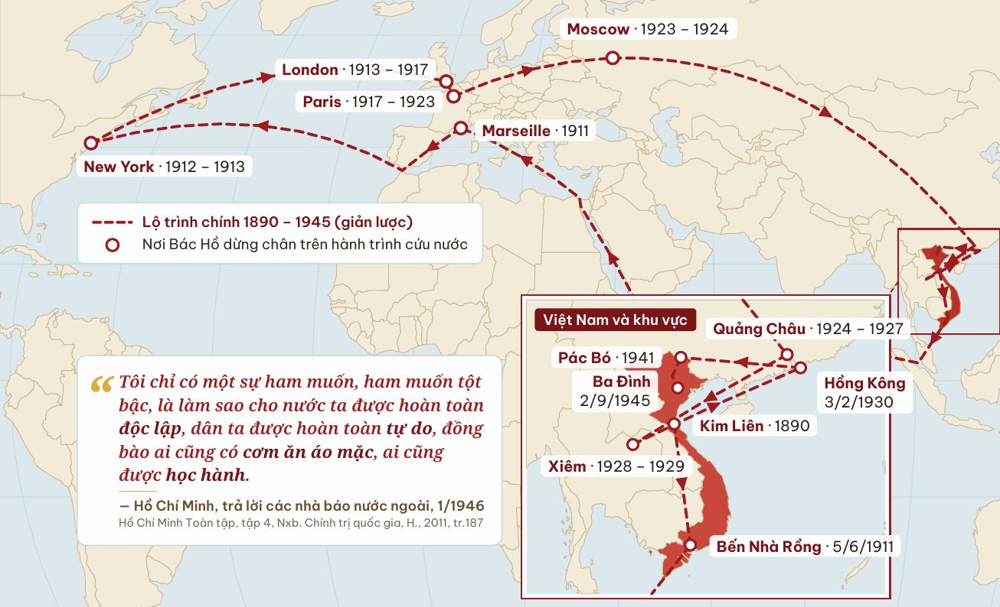
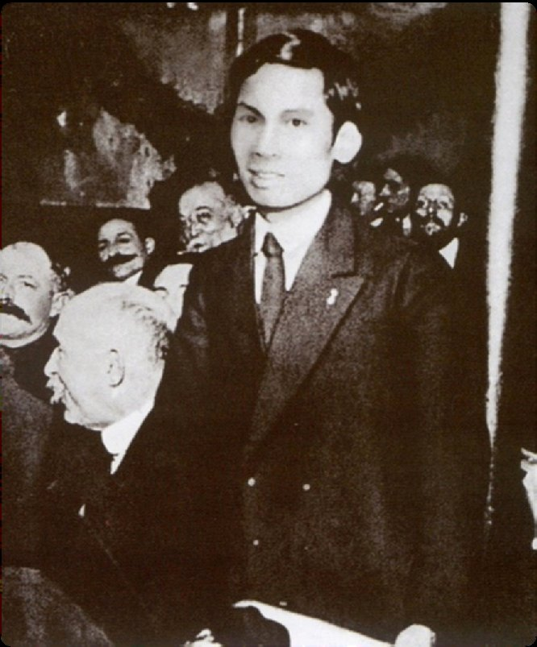
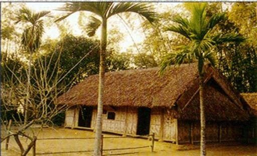
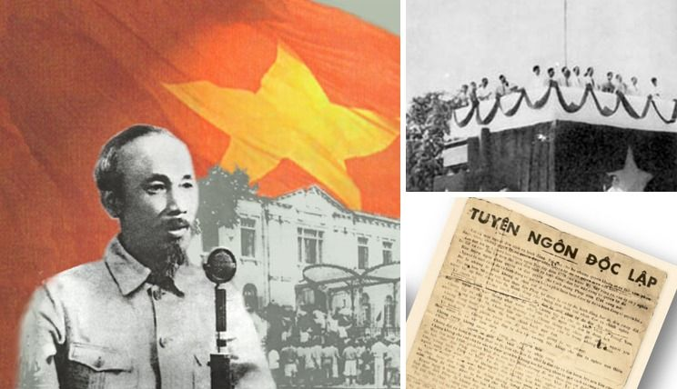
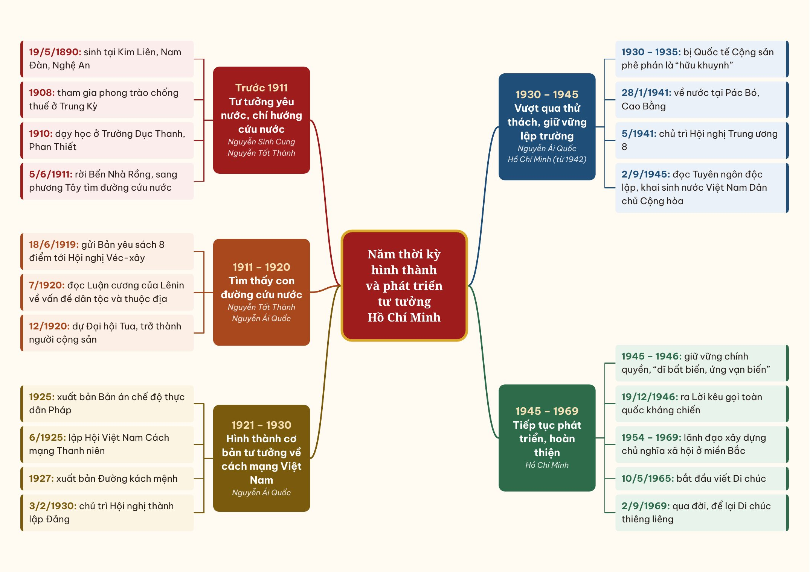

Chủ đề 1
Hành trình hình thành và phát triển tư tưởng Hồ Chí Minh
1Thời kỳ trước năm 1911Hình thành tư tưởng yêu nước, chí hướng cứu nước2Thời kỳ từ 1911 đến 1920Tìm thấy con đường cứu nước, giải phóng dân tộc3Thời kỳ từ 1921 đến 1930Hình thành cơ bản tư tưởng về cách mạng Việt Nam4Thời kỳ từ 1930 đến 1945Vượt qua thử thách, kiên trì giữ vững lập trường5Thời kỳ từ 1945 đến 1969Tiếp tục phát triển, hoàn thiện


Quá trình hình thành và phát triển tư tưởng Hồ Chí Minh

Quê hương Kim Liên, Nam Đàn, Nghệ An
1
Thời kỳ trước năm 1911
Hình thành tư tưởng yêu nước, chí hướng cứu nước
Sinh 19/5/1890 tại Kim Liên, Nam Đàn, Nghệ An; dạy học ở Trường Dục Thanh.
Kim Liên → Huế → Phan Thiết

Bến Nhà Rồng – nơi Người ra đi tìm đường cứu nước
2
Thời kỳ từ 1911 đến 1920
Tìm thấy con đường cứu nước, giải phóng dân tộc
5/6/1911 rời bến Nhà Rồng; 7/1920 đọc Luận cương của Lênin; 12/1920 dự Đại hội Tua.
Nhà Rồng → Pa-ri → Tua

Hội nghị thành lập Đảng 2/1930 tại Hương Cảng (Trung Quốc)
3
Thời kỳ từ 1921 đến 1930
Hình thành cơ bản tư tưởng về cách mạng Việt Nam
Bản án chế độ thực dân Pháp; Đường kách mệnh (1927); 3/2/1930 thành lập Đảng.
Pa-ri → Mát-xcơ-va → Quảng Châu → Hồng Kông

Bác đọc Tuyên ngôn Độc lập tại Ba Đình, 2/9/1945
4
Thời kỳ từ 1930 đến 1945
Vượt qua thử thách, kiên trì giữ vững lập trường
1941 về nước trực tiếp lãnh đạo cách mạng; 2/9/1945 đọc Tuyên ngôn độc lập.
Pác Bó → Tân Trào → Ba Đình

Bản Di chúc của Chủ tịch Hồ Chí Minh
5
Thời kỳ từ 1945 đến 1969
Tiếp tục phát triển, hoàn thiện
Kháng chiến toàn dân, toàn diện; tư tưởng về chủ nghĩa xã hội, Đảng cầm quyền, Nhà nước của dân.
Việt Bắc → Phủ Chủ tịch
Sơ đồ tư duy khái quát 5 giai đoạn
